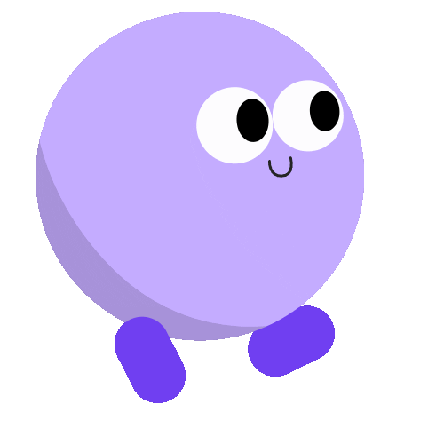

CRT: OFF

E
m
b
e
d
d
a
b
l
o
b
Adventures
01
SINGLE PLAYER
›
02
CREATE ROOM
›
03
JOIN ROOM
›
← →
MOVE
SPACE
JUMP×2
SHIFT
RUN
X
SHOOT
ESC
PAUSE
/01.1
SOLO RUN
Single Player
// Choose your blob
PICK YOUR COLOR
>
START GAME
›
← BACK
/02
HOST
Create Room
// Host a multiplayer match
YOUR NAME
>
CREATE
›
← BACK
/03
CONNECT
Join Room
// Enter a room code to join
ROOM CODE
YOUR NAME
>
JOIN
›
← BACK
/LOBBY
STAND BY
Room Lobby
// Room Code
PLAYERS
YOUR COLOR
>
START MATCH
›
WAITING FOR HOST...
← LEAVE ROOM
/RESULTS
FINAL
Match Results
// Final standings
>
PLAY AGAIN
›
← LEAVE
Paused
// Game suspended
01
RESUME
›
02
LEAVE GAME
›
ESC
RESUME
RACE PROGRESS
◀
▶
B
A